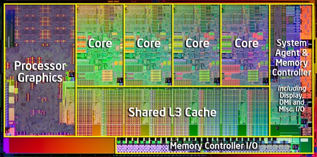
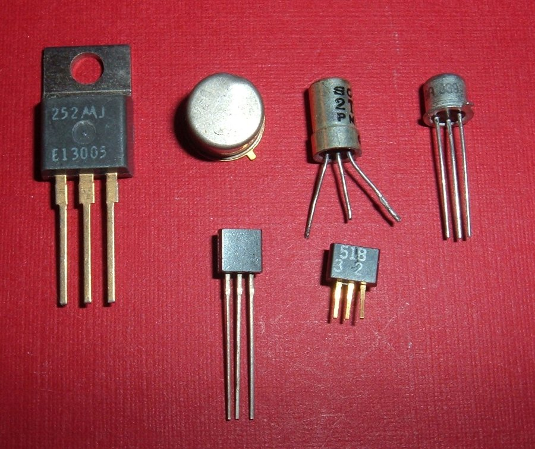
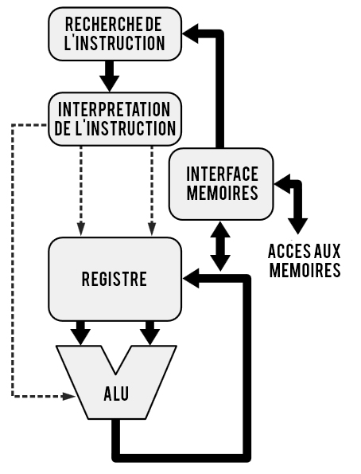
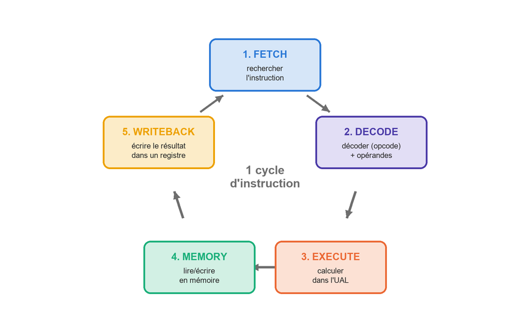
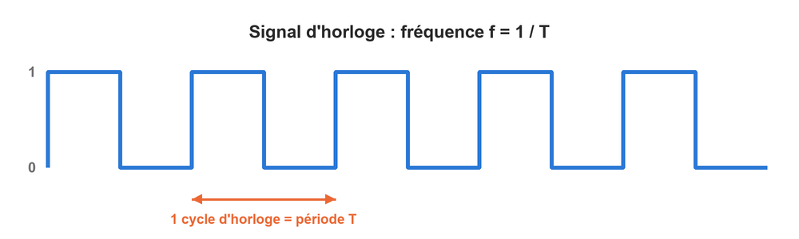

class: center, middle # L'architecture matérielle ## Le processeur <p></p> --- ## Quelques questions de réflexion... * Que se passe-t-il concrètement dans l'ordinateur quand vous additionnez deux nombres dans un programme ? * Un processeur « à 3,5 GHz », qu'est-ce que cela signifie ? * Un processeur à 4 GHz est-il forcément plus rapide qu'un processeur à 3 GHz ? * Pourquoi certains logiciels existent-ils en version 32 bits et en version 64 bits ? --- ## L'ordinateur, un système de traitement de l'information Dans une **unité de traitement**, les traitements peuvent être de **4 natures différentes** : 1. les **opérations arithmétiques** (+, −, ×, /, %) : à partir de certaines informations, on en calcule de nouvelles ; 2. les **opérations logiques** (ET, OU, NON) ; 3. le **stockage** des informations en mémoire ; 4. l'**extraction** des informations de la mémoire. <span style="color: red;">→ Vous connaissez déjà les circuits qui réalisent les deux premières : l'**additionneur complet** (chapitre « Codage des nombres ») et les **portes logiques** (partie « Algèbre de Boole ») !</span> --- ## Processeur et microprocesseur Un composant électronique qui effectue des traitements s'appelle un **processeur**. Un **microprocesseur** est un processeur dont tous les composants ont été suffisamment miniaturisés pour tenir dans **un unique boîtier** (une puce). Un processeur est constitué de **transistors** : de minuscules interrupteurs électroniques qui laissent passer le courant (1) ou non (0). En les assemblant, on fabrique des portes logiques, puis des additionneurs, des mémoires... Un processeur actuel en contient **des milliards**. <div style="text-align: center;"> <p></p> </div> --- ## Que contient un processeur ? <p></p> * L'**unité de contrôle** : elle va chercher l'instruction suivante, l'**interprète** (la décode) et commande les autres éléments. * Le **compteur ordinal** : un registre spécial qui contient l'**adresse de la prochaine instruction** à exécuter. * L'**unité arithmétique et logique** (**UAL**, en anglais **ALU**) : elle effectue les calculs. * Les **registres** : de toutes petites mémoires ultra-rapides, situées au cœur du processeur, qui contiennent les données en cours de traitement. * L'**interface mémoire** et les **bus** : pour échanger des données avec la mémoire centrale. * L'**horloge** : elle cadence le fonctionnement de l'ensemble. --- ## Les instructions Dans un langage de programmation, on écrit par exemple l'affectation : ``` z ← x + y ``` Pour être exécutée par le processeur, cette instruction de **haut niveau** doit être traduite en **langage assembleur**. Elle devient alors **4 instructions** distinctes : ``` PUSH x // va chercher x en mémoire PUSH y // va chercher y en mémoire ADD // additionne x et y (dans l'UAL) POP z // range le résultat à l'emplacement de z ``` Chaque instruction assembleur correspond à un **code binaire** (l'*opcode*) que le processeur sait décoder : c'est le **langage machine**. L'ensemble des instructions qu'un processeur comprend s'appelle son **jeu d'instructions**. --- ## L'exécution d'une instruction <div style="text-align: center;"> <p></p> </div> À la fin du cycle, le processeur recherche l'instruction suivante (grâce au compteur ordinal)... et ainsi de suite, des milliards de fois par seconde ! --- ## L'exécution d'une instruction 1. **FETCH** : recherche de l'instruction suivante en mémoire, à l'adresse indiquée par le compteur ordinal. 2. **DECODE** : interprétation de l'instruction grâce à son *opcode* et recherche des **opérandes** (les données nécessaires) dans les registres ou en mémoire. 3. **EXECUTE** : exécution de l'instruction par l'unité arithmétique et logique. 4. **MEMORY** : transfert d'une donnée d'un registre vers la mémoire (instruction de type *STORE*) ou de la mémoire vers un registre (instruction de type *LOAD*). 5. **WRITEBACK** : écriture du résultat dans un registre. --- ## L'horloge du processeur <div style="text-align: center;"> <p></p> </div> * Le processeur est cadencé par un **signal d'horloge** régulier. Sa **fréquence** s'exprime en **hertz** (Hz) : 1 Hz = 1 événement par seconde. * Le **cycle d'horloge** est la durée d'une période de ce signal : **T = 1 / f**. * À chaque cycle, le processeur peut avancer d'une étape. Le cycle doit être assez long pour que **le calcul le plus lent** soit terminé et que son résultat soit stable avant le cycle suivant. --- ## L'horloge du processeur : calculs **Exemple** : un processeur à **3,5 GHz** (gigahertz). * f = 3,5 GHz = 3 500 000 000 Hz : l'horloge « bat » 3,5 milliards de fois par seconde ; * T = 1 / 3 500 000 000 ≈ 0,000 000 000 286 s ≈ **0,29 ns** (nanoseconde). Dans le modèle simplifié du cours, si le processeur termine **une instruction par cycle**, il exécute **3,5 milliards d'instructions par seconde**. | Préfixe | Symbole | Valeur | |:---:|:---:|:---:| | kilo | k | 10<sup>3</sup> | | méga | M | 10<sup>6</sup> | | giga | G | 10<sup>9</sup> | | nano | n | 10<sup>-9</sup> | --- ## Le pipeline Une instruction passe par **5 étapes** et chaque étape prend un cycle. Faut-il attendre la fin d'une instruction pour commencer la suivante ? **Analogie** : vous avez 3 machines de linge à faire (laver, sécher, plier). Vous n'attendez pas d'avoir plié la 1<sup>re</sup> machine pour lancer la 2<sup>e</sup> : pendant que la 1<sup>re</sup> sèche, la 2<sup>e</sup> lave déjà ! Le processeur fait pareil : c'est le **pipeline**. Pendant qu'une instruction est décodée, la suivante est déjà recherchée, etc. <table class="pipe" style="margin-top: 10px;"> <tr><th style="text-align:left;">Cycle →</th><th>1</th><th>2</th><th>3</th><th>4</th><th>5</th><th>6</th><th>7</th><th>8</th></tr> <tr><td style="width:120px;text-align:left;">Instruction 1</td><td class="F">F</td><td class="D">D</td><td class="E">E</td><td class="M">M</td><td class="W">W</td><td></td><td></td><td></td></tr> <tr><td style="width:120px;text-align:left;">Instruction 2</td><td></td><td class="F">F</td><td class="D">D</td><td class="E">E</td><td class="M">M</td><td class="W">W</td><td></td><td></td></tr> <tr><td style="width:120px;text-align:left;">Instruction 3</td><td></td><td></td><td class="F">F</td><td class="D">D</td><td class="E">E</td><td class="M">M</td><td class="W">W</td><td></td></tr> <tr><td style="width:120px;text-align:left;">Instruction 4</td><td></td><td></td><td></td><td class="F">F</td><td class="D">D</td><td class="E">E</td><td class="M">M</td><td class="W">W</td></tr> </table> <small>F = Fetch, D = Decode, E = Execute, M = Memory, W = Writeback</small> --- ## Le pipeline : le gain Pour exécuter **n** instructions de **k** étapes : * **sans pipeline** : n × k cycles ; * **avec pipeline** : k + (n − 1) cycles (il faut k cycles pour la 1<sup>re</sup> instruction, puis une instruction se termine **à chaque cycle**). **Exemple** : 100 instructions de 5 étapes. * Sans pipeline : 100 × 5 = **500 cycles** ; * Avec pipeline : 5 + 99 = **104 cycles**, presque 5 fois plus rapide ! <span style="color: red;">C'est grâce au pipeline qu'un processeur termine environ une instruction par cycle.</span> Mais attention : si une instruction a besoin du résultat de la précédente, ou s'il y a un saut (un `if`), le pipeline doit parfois **attendre** ou être **vidé**. --- ## 32 bits ou 64 bits ? Un processeur « **64 bits** » possède des **registres de 64 bits** : il manipule les données par blocs de 64 bits et peut produire des **adresses mémoire** de 64 bits. * Avec des adresses de 32 bits, on peut numéroter 2<sup>32</sup> = 4 294 967 296 octets : un processeur 32 bits ne peut donc utiliser que **4 Go** de mémoire vive (environ). * Avec 64 bits, la limite théorique est de 2<sup>64</sup> octets, soit plus de **16 milliards de Go**. <span style="color: red;">→ Une version 64 bits d'un logiciel peut utiliser plus de 4 Go de RAM et profiter des registres plus grands. Elle ne fonctionne que sur un processeur et un système d'exploitation 64 bits.</span> --- ## Estimer la puissance d'un processeur La puissance d'un processeur ne dépend **pas uniquement** de sa fréquence ! * La **fréquence** : plus elle est élevée, plus il y a de cycles par seconde. Le mode **turbo** augmente temporairement la fréquence quand le processeur n'est pas trop chaud. * La **mémoire cache** : une mémoire ultra-rapide sur le processeur. Plus elle est grande, plus les données sont gardées « sous la main » et moins il faut aller les chercher dans la RAM (beaucoup plus lente). * Le **jeu d'instructions** : si le processeur sait exécuter une instruction complexe en une fois, sans la décomposer, le programme s'exécute plus vite. * Le **nombre de cœurs** : plusieurs cœurs permettent d'exécuter des instructions **en parallèle** (voir chapitre suivant). --- ## Exercice de synthèse Comparez ces deux processeurs. Lequel semble le plus performant ? Justifiez. .small-table[ | | **Intel Core i5-9400F** | **AMD Ryzen 5 3600** | |:---|:---:|:---:| | Nombre de cœurs | 6 | 6 | | Fréquence de base | 2,9 GHz | 3,6 GHz | | Fréquence turbo | 4,1 GHz | 4,2 GHz | | Mémoire cache | 9 Mo | 35 Mo | | Consommation (TDP) | 65 W | 65 W | ] 1. Calculez la durée d'un cycle d'horloge pour chacun des processeurs (à la fréquence de base). 2. Pourquoi la fréquence seule ne suffit-elle pas à comparer deux processeurs ? --- ## Sources des images * https://fr.wikipedia.org/wiki/Transistor * https://fr.wikipedia.org/wiki/Intel_Core_i7 * Schémas : réalisation personnelle et ancien cours d'informatique (INDBG)